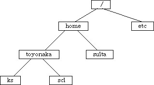
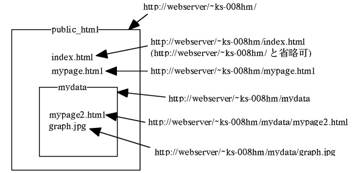
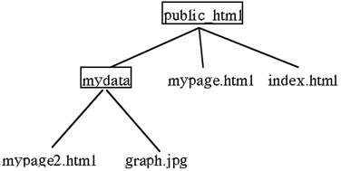

というように表現します．
で表されます．また，"sci"は
となります．しかし，もし今いる場所(カレントディレクトリという)が"suita" の場合，例えば"../../"はルートディレクトリを表すようになり，カレントディレクトリ の場所によって，指す場所が変わってしまいます．

私（login 名 ks-008hm）のpublic_htmlディレクトリがwwwで公開されていたとします．
そして，public_htmlの中には，index.html，mypage.html，の2つのファイルとmydataの１つのディレクトリ
があるとします．
また，mydataディレクトリには，mypage2.htmlとgraph.jpgの２つのファイルがあったとします．

このとき，それぞれのファイルやディレクトリのURLは
| ファイル＆ディレクトリ名 | URL |
|---|---|
| public_htmlディレクトリ | http://webserver/~ks-008hm/ |
| index.html | http://webserver/~ks-008hm/index.html ただし，http://webserver/~ks-008hm/と省略可 |
| mypage.html | http://webserver/~ks-008hm/mypage.html |
| mydataディレクトリ | http://webserver/~ks-008hm/mydata/ |
| mypage2.html | http://webserver/~ks-008hm/mydata/mypage2.html |
| graph.jpg | http://webserver/~ks-008hm/mydata/graph.jpg |
さて，index.htmlからみれば，mypage.hmlは同じディレクトリ（public_html）内にあります．
したがって， index.html からは， mypage.htmlを< a href="mypage.html"> で参照できます．
同様に， mypage.html からは， index.htmlを< a href="index.html"> で参照できます．
index.htmlからみれば，同じディレクトリ（public_html）内にあるmydataディレクトリの中にmypage2.hmlが存在します．
したがって， index.html からは， mypage2.htmlを< a href="/mydata/mypage.html"> で参照できます．
mypage.html からも， mypage2.htmlを< a href="/mydata/mypage.html"> で参照できます．
mypage2.htmlからみれば，同じディレクトリ（mydata）の外にmypage.hmlが存在します．
したがって， mypage2.html からは， mypage.htmlを< a href="../mypage.html"> で参照できます．
../ は一つ外のディレクトリを意味します．
相対的なパスを用いるメリットは，ファイル等をディレクトリごと他のディレクトリへコピーしても，そのまま動作することです！！
できるだけ，相対的なパスを用いましょう．
戻る